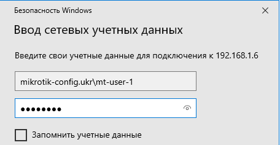

Як підключити USB HDD, SSD до MikroTik, створення мережної папки
Перевірка підключення HDD \ SSD \ flash
Налаштування знаходиться System→Resources→Usb

Якщо у списку Usb пристроїв не відображається HDD \ SSD \ flash , можна спробувати перезавантажити Usb порт.
Налаштування знаходиться System→Routerboard→Usb Power Reset

/system routerboard usb power-reset duration=5s
Форматування та ініціалізація HDD \ SSD \ flash
Налаштування знаходиться System→Disks
Файлова система FAT32 матиме обмеження розмір файлу рівний 4Гб. Щоб не впиратися в це обмеження, буде використовуватися файлова система EXT3 .
Після успішного форматування, список Disk list матиме вигляд:
Налаштування MikroTik SAMBA (SMB сервер)
Samba – пакет програм , які дозволяють звертатися до мережних дисків та принтерів на різних операційних системах за протоколом SMB/CIFS .

Налаштування SMB
Налаштування знаходиться IP→SMB

/ip smb
set allow-guests=no domain=MikroTik-Config.ukr enabled=yes interfaces=Bridge-LAN
allow-guests=no відключити гостьовий доступ;
interfaces=Bridge-LAN мережні ресурси будуть доступні лише в локальному розміщенні (інтерфейс Bridge-LAN )
Додавання користувача для доступу до папки мережі
Налаштування знаходиться IP→SMB→Users

/ip smb users
add name=mt-user-1 password=1qaz@WSX read-only=no
Створення папки мережі SAMBA
Налаштування знаходиться IP→SMB→Shares
/ip smb shares
set [ find default=yes ] disabled=yes
add directory=disk1/Share max-sessions=100 name=Share
І знову створена папка буде доступна в загальному списку ( Files ):

Підключення мережної папки MikroTik SMB на Windows ПК
Усі дії будуть виконувати з боку ПК з ОС Windows .
Підключення до папки мережі

SAMBA авторизація

Спроба записати файл

Перевірка швидкості читання запису MikroTik SAMBA
При тестуванні використовуватиметься один файл, розмір якого трохи менше 2Гб.
Перевірка швидкості запису

Відображення файлу в MikroTik SAMBA

Перевірка швидкості читання